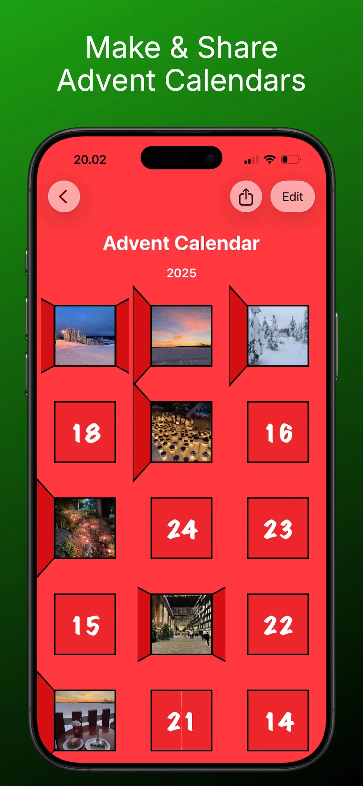
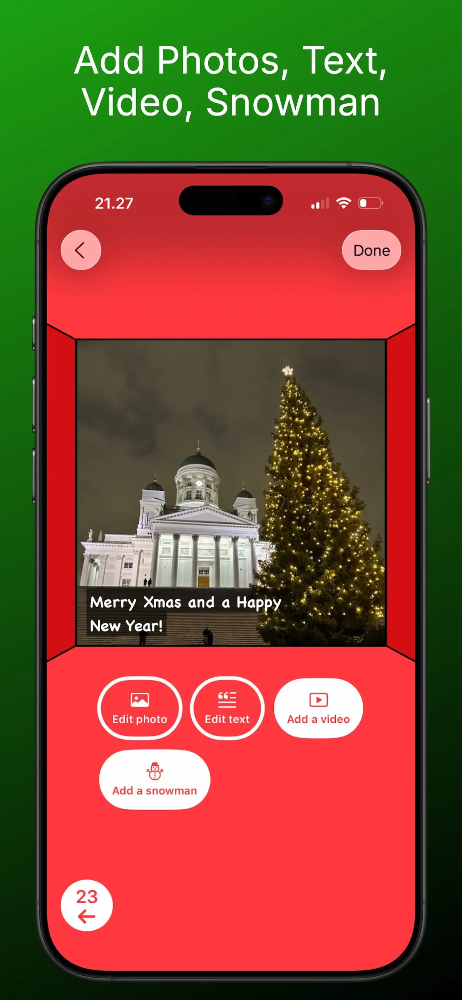
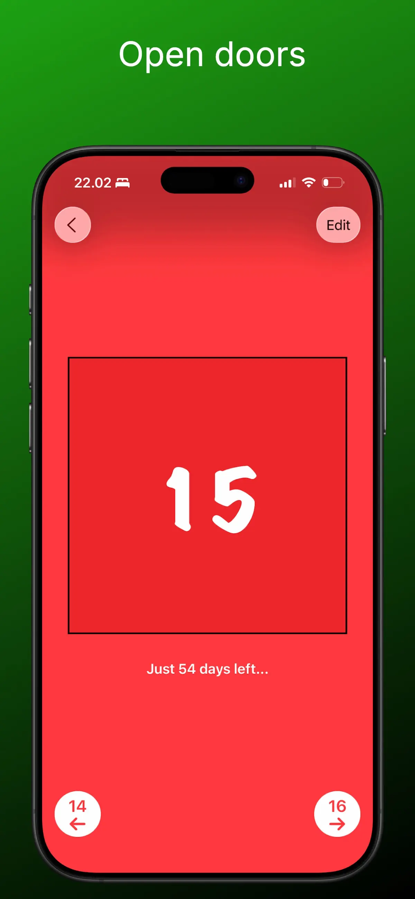
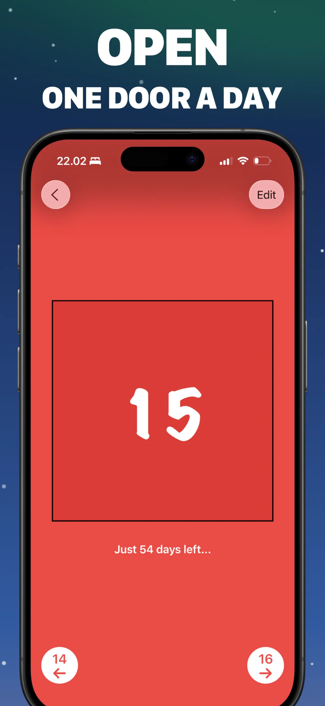

A personalized advent calendar in your pocket
Create it, then open a door a day — here's what it looks like.





From idea to advent calendar in three steps
No craft supplies, no printing, no login — just your phone and 24 little surprises.
Create your calendar
Start a new calendar and fill each of the 24 doors with a photo, a message, a video, or an interactive snowman. Mix and match freely — every door can be different.
Share it with anyone
Send the calendar as a single file via AirDrop, WhatsApp, Telegram, or email. The recipient opens it in the free app on iPhone, iPad, or Mac — no account required.
Open a door a day
From December 1st, one door unlocks each day, counting down to Christmas. No peeking ahead — the daily surprise is the magic.
Advent calendar guides & ideas
Everything you need to plan, fill, and send the perfect digital advent calendar.
How to Make a Digital Advent Calendar (Free, in 10 Minutes)
The complete step-by-step guide — no craft supplies needed.
Read the guide → IdeasPhoto Advent Calendar: Turn 24 Memories into a Countdown
Use your own photos to make a deeply personal gift.
Read the guide → CouplesLong-Distance Advent Calendar for Your Partner
24 daily surprises that close the distance in December.
Read the guide → FamilyA Digital Advent Calendar for Kids
Safe by design, and impossible to peek ahead.
Read the guide → IdeasWhat to Put in a Digital Advent Calendar: 24+ Door Ideas
For partners, kids, parents, friends, and coworkers.
Read the guide → CountdownA Christmas Countdown App with a Door for Every Day
Count down to Christmas with a daily ritual, not just a timer.
Read the guide → FamilyAn Advent Calendar for Grandparents
Send grandma and grandpa a daily dose of the grandkids.
Read the guide → How-toVirtual Advent Calendar: Make One Online & Send It Anywhere
How virtual calendars work and how to deliver yours.
Read the guide →Frequently asked questions
How do I make a digital advent calendar on my iPhone?
Download Advent Maker from the App Store, tap New calendar, and fill each of the 24 doors with a photo, text, video, or snowman. No account or login is needed — it can be done in as little as ten minutes. Learn more →
Can I use my own photos in the advent calendar?
Yes — every door can hold a photo from your library, so 24 favorite memories become a photo advent calendar. Combine photos with captions and video for extra impact. Learn more →
How do I send an advent calendar to someone far away?
Tap Share calendar and send the calendar file via WhatsApp, Telegram, or email. They open it in the free app — perfect for long-distance relationships and family abroad. Learn more →
Is Advent Maker a free advent calendar app?
Completely free: no purchase, no subscription, no login. Creating and sharing calendars costs nothing. Learn more →
What should I put behind the 24 doors?
Family photos, short videos, YouTube links, daily jokes or compliments, memories from the year, and the built-in snowman are all favorites. Save something special for December 24th. Learn more →
Is it suitable for kids?
Yes — rated 4+, with no chat, no account, and no data collection. Doors unlock day by day, so kids can't peek ahead. Learn more →
When do the advent calendar doors open?
One door unlocks per day through December, counting down to Christmas Eve. The app shows how many days are left until the next door. Learn more →
Does the recipient need an account to open my calendar?
No. They just install the free app and open your calendar file — no sign-up, no personal data. Works on iPhone, iPad, and Mac. Learn more →
Someone's December is about to get better.
Make your own advent calendar today — it's free, takes minutes, and they'll open one door every day until Christmas.